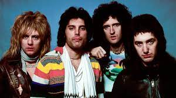

Do you like Bohemian Rhapsody?
I like Queen a lot. Check out some lyrics below

Is this the real life
Is this just fantasy
Caught in a landslide
No escape from reality
Open your eyes, look up to the skies and see
I'm just a poor boy, (oooh, poor boy), I need no sympathy
Because I'm easy come, easy go
Little high, little low
Anyway the wind blows, doesn't really matter to me - to me
Mama, just killed a man
Put a gun against his head
Pulled my trigger now he's dead
Mama, life had just begun
But now I've gone and thrown it all away
Mama, oooh, ooh, ooh, ooh
Didn't mean to make you cry
If I'm not back again this time tomorrow
Carry on, carry on, as if nothing really matters
Too late, my time has come
Sends shivers down my spine
Body's aching all the time
Goodbye everybody, I've got to go
Gotta leave you all behind and face the truth
Mama, oooh, ooh, ooh, ooh
(Anyway the wind blows)
I don't want to die (oooohhh)
I sometimes wish I'd never been born at all (oooh-ooh, oooh-ooh,
oooh-ooh, oooh-ooh)
I see a little silhouetto of a man
Scaramouche, Scaramouche will you do the fandango?
Thunderbolts and lightning - very, very frightening me
Gallileo, gallileo
Gallileo, gallileo
Gallileo, figaro - magnifico-o-o-o-oh
I'm just a poor boy, nobody loves me
He's just a poor boy from a poor family
Spare him his life from this monstrosity
Easy come, easy go, will you let me go
Bismillah! No - we will not let you go, let him go
Bismillah! We will not let you go, let him go
Bismillah! We will not let you go, let me go
Will not let you go, let me go
Never, never, never, never, never (never let you go)
Never let me go-o-o-o-oh
No, no, no, no, no, no, no
Oh, mama mia, mama mia
Mama mia let me go
Beelzebub has a devil put aside for me, for me, for me
So you think you can stone me and spit in my eye?
So you think you can love me and leave me to die?
Oh, baby, can't do this to me baby
Just gotta get out - just gotta get right outta here
Ooooh, ooooh, ooooh, oooh yeah, oooh yeah
Nothing really matters
Anyone can see
Nothing really matters
Nothing really matters to me
Anyway the wind blows